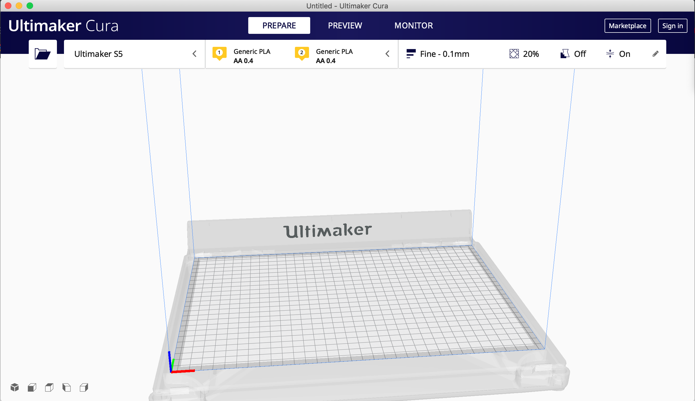
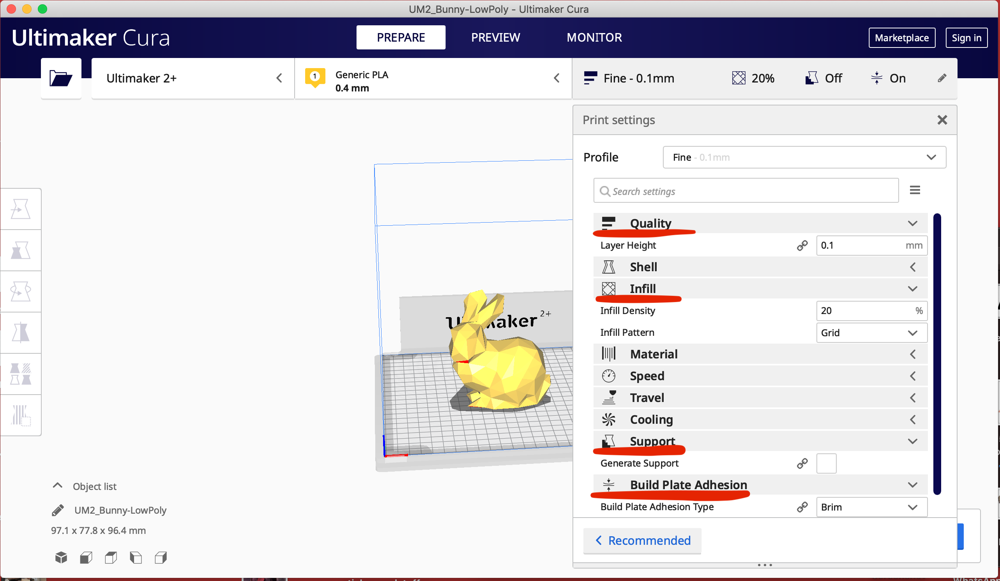
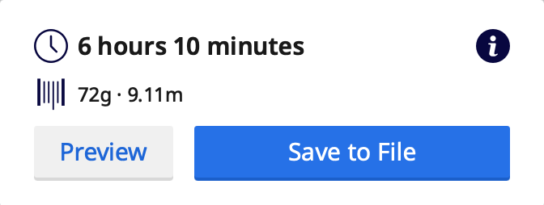

3D Printing & Scanning
3D Printing is very useful and commonly used today for prototyping which is relevant to what we are learning now. It is more eco-friendly because you will use less material to produce what you need instead of cutting from a piece of wood and throwing the rest away for example. It is also one of the fastest methods to produce a prototype (just a few hours to print) to show someone.
Sometimes, we need support when 3D-Printing, which can be removed later either manually or melting away in liquid. If we print without supports, the horizontal parts will be okay but the vertical parts (especially those at 45 degrees) will overhang and cause material to build up.
There is a minimum thickness as the nozzle of the 3d printer is 0.4mm and if the wall is too thin, the wall will break. Having a thicker wall can make it stronger. We try to go for 1.2mm wall thickness as the minimum when printing.
When designing, we try to use the minimum amount of infill to design a product as having it 100% solid for example, will waste more material and it slows down the production time as the printer has to fill every space.
It is important to plan out when you want to 3D-print something instead of going to the lab at the last minute. The printing will take a few hours so we should always arrive early and anticipate a queue, allowing extra time for that.
This is a typical 3D-printer:

It includes the print display, extruder, hot end, cooling fan, filament and print bed. The print bed can be heated up to 100 degrees but is usually set to 60. We should never touch the hot end and the print bed during and immediately after printing as it will be hot.
We will need to be certified before we can book a 3D-Printer for use.
We will start with creating the model of the product on the software (fusion 360, autodesk, etc). We will then use a slicing software to prepare the STL file for printing, meaning that the software will translate the design into something the printer can read and print.
CURA
For this module, we are using the software CURA for 3D-printing. It is an opensource slicing software available for download online.
Cura Tutorial
How to use Cura to prepare the design for printing:
- After installing Cura, select the printer that you are using and add it. Add the settings for the machine. An important thing to note is to change the size of the extruder to the number that your printer is using.
- After adding the printer, select the material and check the settings again, especially the extruder size.
- Next, we can load the model into the space by clicking the folder at the top right corner to import the file.
- Click Preview. If there is an overhanging part in your model, make sure to check the "Generate Support" box in the profile settings.
- Checking the speed can be done by dragging the blue bar at the right side of the screen, and we can change the speeds accordingly if we find that anything might be dangerous or adds mechanical stress.
- OPTIONAL: We can enable "z-hop" as a safety precaution.
- After you are done, you can save the settings for future use by clicking "create profile from current settings" under Profile and saving it.
- Save to File and move it to an SD card so it can be read on the printer. The file type should be g-code file.
Thingiverse is a site where you can browse and download various 3D models created by others. You can download the STL file and use it to 3D-print the design or tweak it to your liking.
During the practical session, we tested it out and downloaded a geometric bunny model to import it into CURA.


After you click Slicing, you can find out the estimated time and adjust the size and settings accordingly if it takes too long.
3D Printing Practical Session
We also learnt how to use the 3D printers in FABLAB, testing out the printers with a small hook print, which took just 14 minutes.- Make sure the lights in the printer are on. If not, turn the switch on behind the machine.
- Check that there is enough filament for your print.
- Put the SD card into the slot (each machine has an assigned SD card with corresponding number).
- Use the knob to select the Print option and click.
- Select your design and print.
- Once it starts, the progress bar will appear.
If it looks weird or misaligned when printing, the machine may need to be recalibrated.
Wait for the machine to cool down after it is done before removing the design from the base plate.